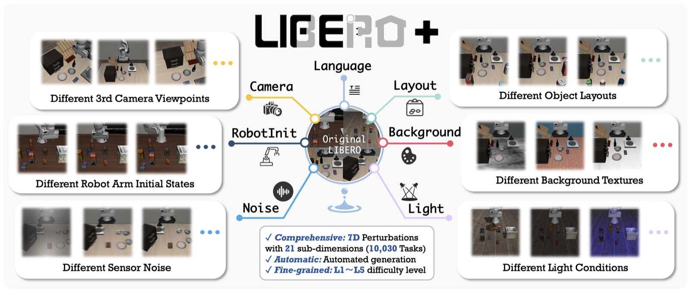

LI
LIBERO-Plus
在 LIBERO 上施加七类扰动，测 VLA 模型对视角、初始状态、语言等变化的鲁棒性。
壹碑面
LIBERO-Plus
官方榜单 ↗
类型 仿真指标 Total 成功率行数 27刷新 人工核验官方数据日 2026-06-15本站拉取 2026-11-14
据仓库榜单（2025-10）与论文自报整理。仅用 LIBERO 训练时 ACoT-VLA 为 86.6%，列首位（2026-01）；用 LIBERO-Plus 训练集微调后 Kairos-joint 为 90.8%（2026-06）。两种口径分块。
| # | 模型 | Total 成功率 | 协议 | 分榜 | 日期 | 状态 |
|---|---|---|---|---|---|---|
| 1 | ACoT-VLA 智元机器人 / 北京航空航天大学 |
86.6% |
LIBERO 训练后零样本迁移；72.6/82.6/87.5/97.7/96.5/87.8/88.1（相机/机器人/语言/光照/背景/噪声/摆放） |
仅 LIBERO 训练 | 01·16 | 自报 |
| 2 | π0.5 Physical Intelligence |
85.7% |
ACoT-VLA 论文用官方 checkpoint 复现，零样本迁移；75.8/79.4/83.3/95.5/95.0/89.6/87.0（相机/机器人/语言/光照/背景/噪声/摆放） |
仅 LIBERO 训练 | 01·16 | 自报 |
| 3 | VLANeXt 南洋理工大学 S-Lab 等 |
83.9% |
LIBERO 训练后零样本迁移；90.4/65.7/81.8/95.9/82.5/94.1/80.8（相机/机器人/语言/光照/背景/噪声/摆放） |
仅 LIBERO 训练 | 02·20 | 自报 |
| 4 | ABot-M0 高德 AMAP CV Lab |
80.5% |
只用标准 LIBERO 数据训练，未在 LIBERO-Plus 上微调；60.4/67.9/86.4/96.2/91.6/86.4/82.6（相机/机器人/语言/光照/背景/噪声/摆放） |
仅 LIBERO 训练 | 02·11 | 自报 |
| 5 | Afford-VLA 复旦大学等 |
78.1% |
LIBERO 训练后直接评测，未微调；56.0/56.8/91.5/96.8/97.0/80.9/78.9（相机/机器人/语言/光照/背景/噪声/摆放） |
仅 LIBERO 训练 | 05·22 | 自报 |
| 6 | AVA-VLA 理想汽车 / 北京工业大学等 |
74.7% |
只用 LIBERO 训练，每个 suite 一个策略（四 suite 共用一个策略时为 70.1%）；69.4/34.9/81.5/97.5/94.1/79.1/78.3（相机/机器人/语言/光照/背景/噪声/摆放） |
仅 LIBERO 训练 | 11·24 | 自报 |
| 7 | RoVLA 中山大学等 |
74.3% |
在 LIBERO 数据上微调后评测；58.4/36.3/92.9/95.6/95.0/80.9/73.0（相机/机器人/语言/光照/背景/噪声/摆放） |
仅 LIBERO 训练 | 05·19 | 自报 |
| 8 | OpenVLA-OFT Stanford |
69.6% |
基准团队评测，官方 LIBERO checkpoint；56.4/31.9/79.5/88.7/93.3/75.8/74.2（相机/机器人/语言/光照/背景/噪声/摆放） |
仅 LIBERO 训练 | 10·15 | 官方榜 |
| 9 | RIPT-VLA UT Austin |
68.4% |
基准团队评测；55.2/31.2/77.6/88.4/91.6/73.5/74.2（相机/机器人/语言/光照/背景/噪声/摆放） |
仅 LIBERO 训练 | 10·15 | 官方榜 |
| 10 | OpenVLA-OFT_m Stanford |
67.9% |
基准团队评测，四 suite 混合微调的单一 checkpoint；55.6/21.7/81.0/92.7/91.0/78.6/68.7（相机/机器人/语言/光照/背景/噪声/摆放） |
仅 LIBERO 训练 | 10·15 | 官方榜 |
| 11 | π0-FAST Physical Intelligence |
61.6% |
基准团队评测，官方 LIBERO checkpoint；65.1/21.6/61.0/73.2/73.2/74.4/68.8（相机/机器人/语言/光照/背景/噪声/摆放） |
仅 LIBERO 训练 | 10·15 | 官方榜 |
| 12 | SRPO（OpenVLA* one-shot） 上海创智学院 / 复旦大学 / 同济大学 |
59.6% |
one-shot SFT 后在线 SRPO 强化学习，不用增广数据；17.1/51.0/81.8/70.4/88.9/35.3/72.4（相机/机器人/语言/光照/背景/噪声/摆放） |
仅 LIBERO 训练 | 11·19 | 自报 |
| 13 | OpenVLA-OFT_w Stanford |
55.8% |
基准团队评测，去掉腕部相机输入；10.4/38.7/70.5/76.8/93.6/49.9/69.9（相机/机器人/语言/光照/背景/噪声/摆放） |
仅 LIBERO 训练 | 10·15 | 官方榜 |
| 14 | π0 Physical Intelligence |
53.6% |
基准团队评测，官方 LIBERO checkpoint；13.8/6.0/58.8/85.0/81.4/79.0/68.9（相机/机器人/语言/光照/背景/噪声/摆放） |
仅 LIBERO 训练 | 10·15 | 官方榜 |
| 15 | UniVLA 香港大学 OpenDriveLab |
42.9% |
基准论文 v3 表 2 数值，仓库榜单此项记 43.9；1.8/46.2/69.6/69.0/81.0/21.2/31.9（相机/机器人/语言/光照/背景/噪声/摆放） |
仅 LIBERO 训练 | 10·15 | 自报 |
| 16 | NORA SUTD declare-lab |
39.0% |
基准团队评测；2.2/37.0/65.1/45.7/58.6/12.8/62.1（相机/机器人/语言/光照/背景/噪声/摆放） |
仅 LIBERO 训练 | 10·15 | 官方榜 |
| 17 | WorldVLA 阿里巴巴达摩院 |
25.0% |
基准团队评测；0.1/27.9/41.6/43.7/17.1/10.9/38.0（相机/机器人/语言/光照/背景/噪声/摆放） |
仅 LIBERO 训练 | 10·15 | 官方榜 |
| 18 | OpenVLA Stanford（OpenVLA 团队） |
15.6% |
基准团队评测，各 suite 官方 checkpoint；0.8/3.5/23.0/8.1/34.8/15.2/28.5（相机/机器人/语言/光照/背景/噪声/摆放） |
仅 LIBERO 训练 | 10·15 | 官方榜 |
| 1 | Kairos-joint Kairos Team（kairos-agi） |
90.8% |
在 LIBERO-Plus 上微调；推理时视频与动作 token 联合去噪；95.9/74.6/95.3/97.1/97.1/95.4/83.8（相机/机器人/语言/光照/背景/噪声/摆放） |
含 LIBERO-Plus 训练集 | 06·15 | 自报 |
| 2 | Kairos Kairos Team（kairos-agi） |
89.0% |
在 LIBERO-Plus 上微调；95.5/72.6/86.8/97.7/95.8/96.8/81.5（相机/机器人/语言/光照/背景/噪声/摆放） |
含 LIBERO-Plus 训练集 | 06·15 | 自报 |
| 3 | ACoT-VLA 智元机器人 / 北京航空航天大学 |
88.0% |
在 LIBERO-Plus 训练集上监督微调；96.6/70.4/79.7/95.1/97.1/95.9/85.0（相机/机器人/语言/光照/背景/噪声/摆放） |
含 LIBERO-Plus 训练集 | 01·16 | 自报 |
| 4 | SRPO（OpenVLA* one-shot） 上海创智学院 / 复旦大学 / 同济大学 |
82.1% |
one-shot SFT（含 LIBERO-Plus 增广数据）后在线 SRPO 强化学习；83.4/62.0/73.6/97.2/97.7/85.7/75.2（相机/机器人/语言/光照/背景/噪声/摆放） |
含 LIBERO-Plus 训练集 | 11·19 | 自报 |
| 5 | RoVLA 中山大学等 |
82.0% |
在 LIBERO-Plus 数据上微调；96.6/32.0/91.5/95.9/96.1/95.1/74.1（相机/机器人/语言/光照/背景/噪声/摆放） |
含 LIBERO-Plus 训练集 | 05·19 | 自报 |
| 6 | OpenVLA-OFT+ LIBERO-Plus 团队（基于 OpenVLA-OFT） |
79.6% |
在 LIBERO-Plus 数据上混合微调；论文 v3 表 2 记 79.5；92.8/30.3/85.8/94.9/93.9/89.3/77.6（相机/机器人/语言/光照/背景/噪声/摆放） |
含 LIBERO-Plus 训练集 | 10·15 | 官方榜 |
| 7 | GR00T N1.6 NVIDIA |
79.4% |
RoVLA 论文复现，在 LIBERO-Plus 数据上微调；92.6/33.5/80.1/93.6/95.4/93.6/75.0（相机/机器人/语言/光照/背景/噪声/摆放） |
含 LIBERO-Plus 训练集 | 05·19 | 自报 |
| 8 | π0.5 Physical Intelligence |
75.7% |
ACoT-VLA 论文复现，在 LIBERO-Plus 训练集上微调，冻结语言模型主干；70.3/41.7/81.1/97.3/94.6/71.8/84.9（相机/机器人/语言/光照/背景/噪声/摆放） |
含 LIBERO-Plus 训练集 | 01·16 | 自报 |
| 9 | π0 Physical Intelligence |
67.4% |
ACoT-VLA 论文复现，在 LIBERO-Plus 训练集上微调，冻结语言模型主干；79.6/21.1/72.5/84.7/86.2/68.3/69.4（相机/机器人/语言/光照/背景/噪声/摆放） |
含 LIBERO-Plus 训练集 | 01·16 | 自报 |
贰上榜之器8 个
叁同类之碑